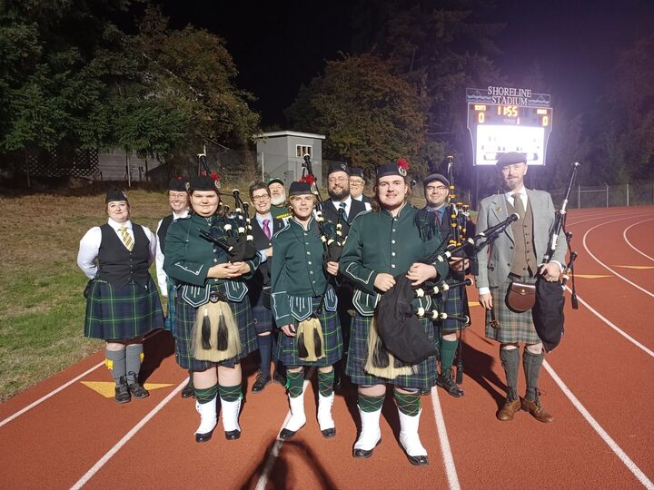
Fundraiser: Pipes for the Pipers
Our 2026-27 fundraiser: $6,000 for three new sets of pipes. Click to donate.

Our 2026-27 fundraiser: $6,000 for three new sets of pipes. Click to donate.
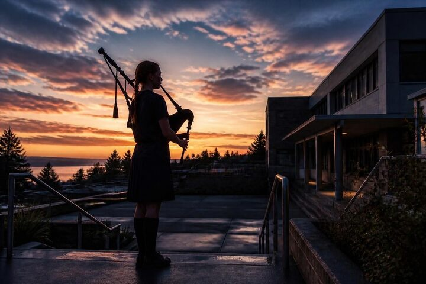
The Great Highland Bagpipe, "live" from Shoreline since 1961.
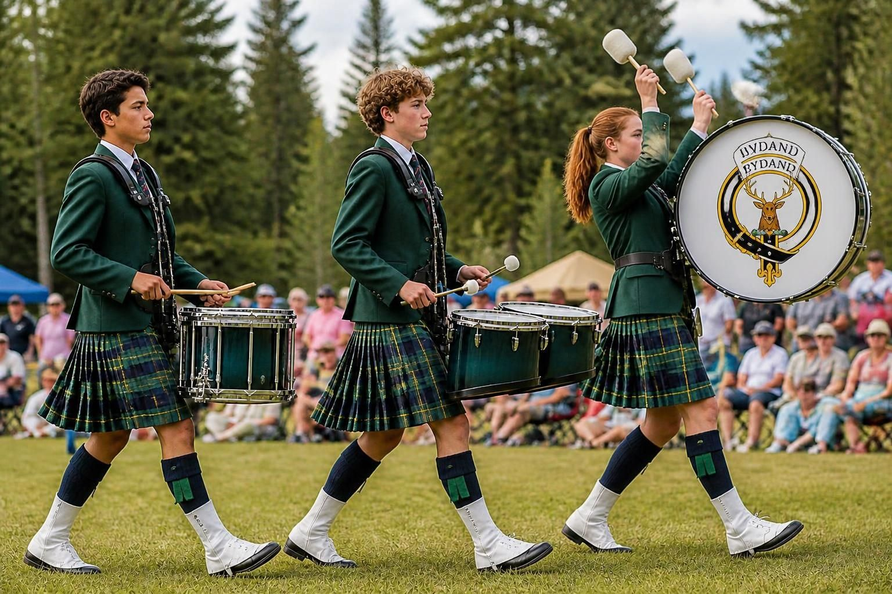
Snare, tenor, and bass drummers drive the band.
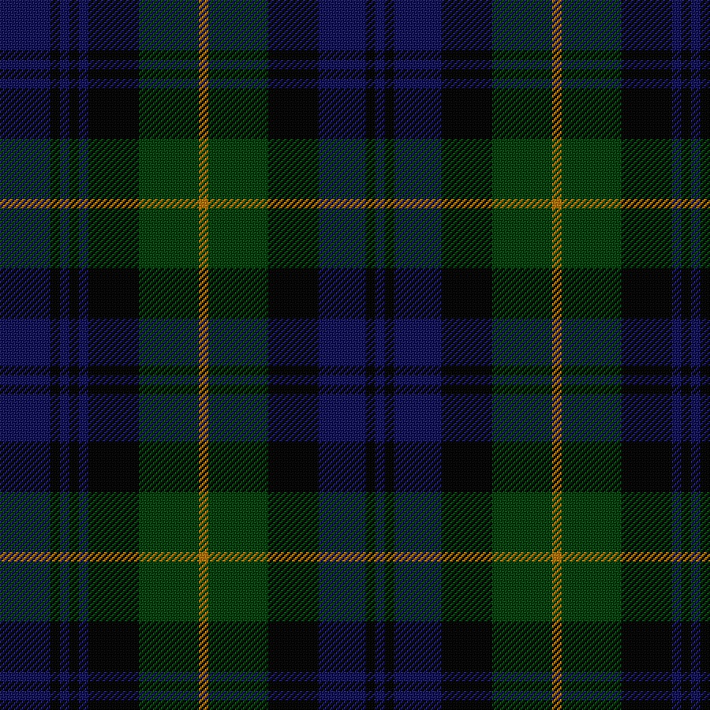
Shorecrest's kilts are the modern Gordon sett, worn with permission of the Clan.
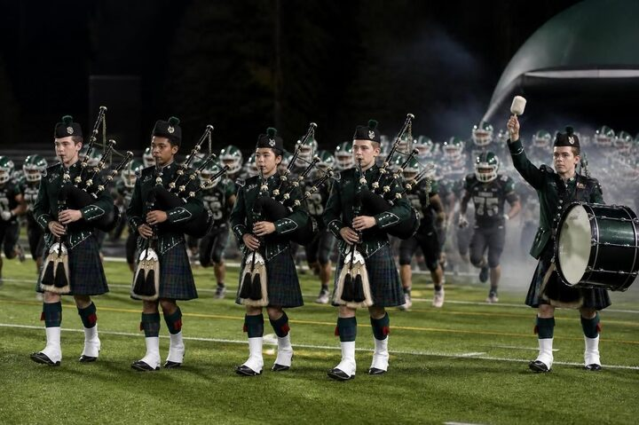
Pipes have escorted the Scots onto the field at home games for 40 years.
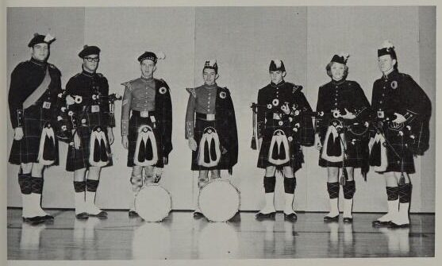
Every piper starts on the practice chanter to learn the basics.
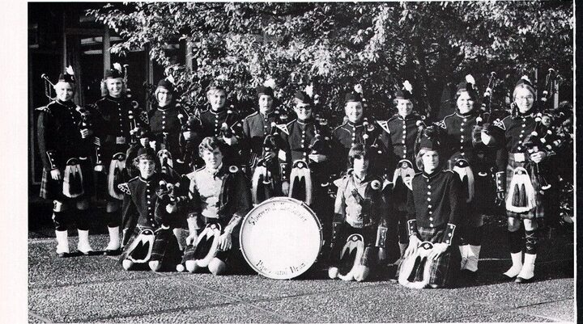
Competing solo builds steady hands and steady nerves.
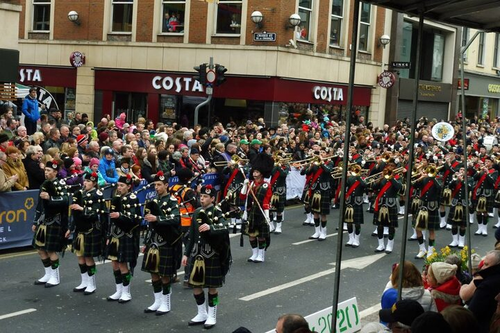
You'll find us at civic events across Shoreline and at Marching Band events every spring.
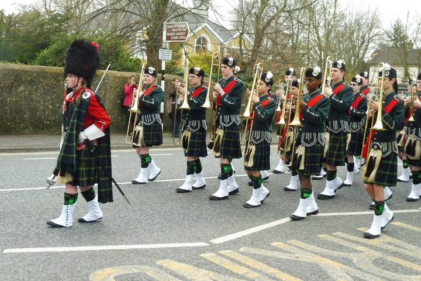
Highland dress, head to hose.
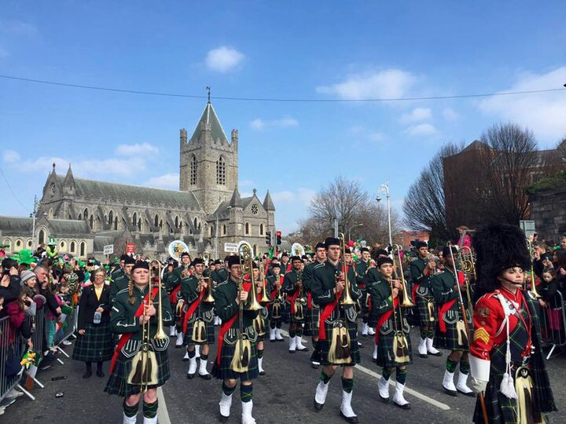
We meet Tuesdays and Thursdays after school all year. Everyone is welcome!
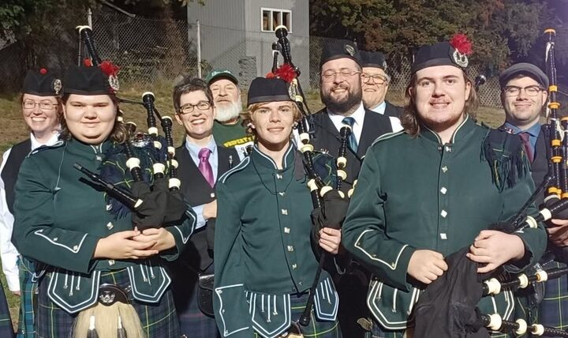
No prior music required. Curiosity is enough!
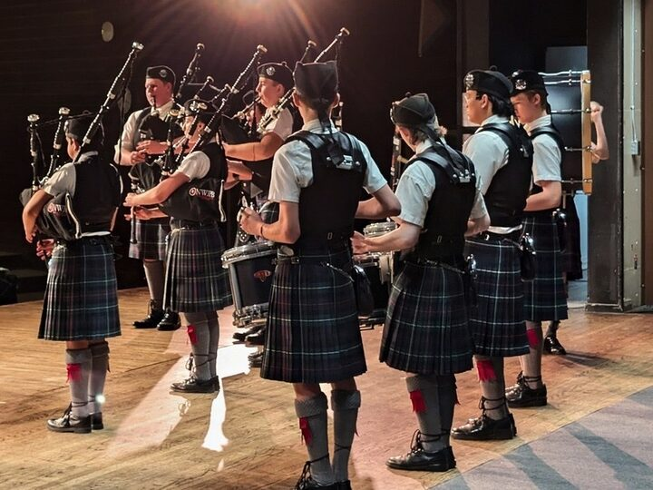
The chanter whispers; the pipes do not. Always wear your earplugs!
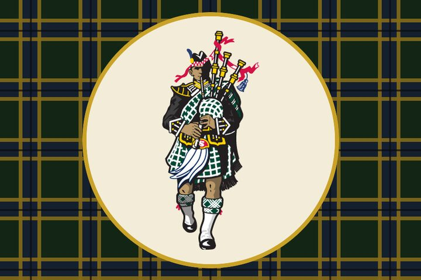
The Shorecrest Highlanders' motto in the Scots language via Clan Gordon: abiding or steadfast.